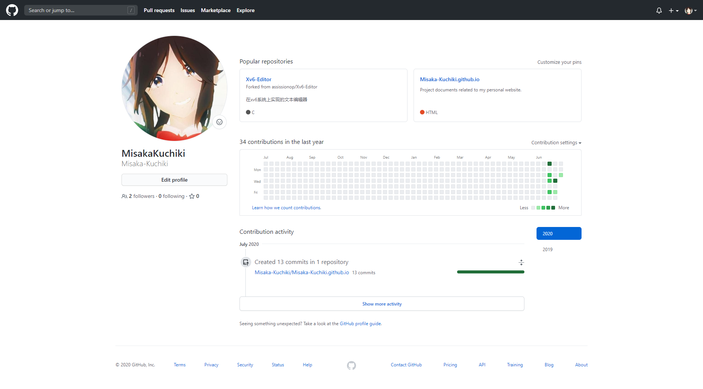

1.前言
一直想做一个自己的个人主页，记录自己的生活经历和学习心得，但苦于各种琐事和懒癌一拖再拖，直到最近本科的毕业相关事宜尘埃落地，才终于下定决心开始制作。经过相关的查阅后发现，Github有提供一个叫做Github Pages的服务，它为每一个用户免费提供一个主页的域名和项目仓库，利用该仓库还能免费托管你的静态网页。这样我们就能够同时省下购买域名和服务器维护等相关开销。 既然如此那么何乐不为呢。于是我选用了Github Pages来制作我的主页，同时也记录一下搭建的过程，希望能够帮到后来有缘看到这篇文章的你。
2.创建项目仓库
既然是Github提供的服务那么自然需要相应的账号，相信各位都已经有了因此就不再做赘述。进到个人主页中，点击右上角的“+”号然后选择“New repository”创建仓库。

然后在出现的页面中分别填写：
Repository name：必填，且需要与自己的Github用户名保持一致，以避免后续主页可能出现的404问题；
Description：选填，仓库描述；
Public/Private：二选一，选择是否公开该项目仓库；
Initialize this repository with a README：选择是否为项目仓库创建说明文件，后续可自行添加。
然后点击“Create repository”即可创建好我们的托管仓库了。